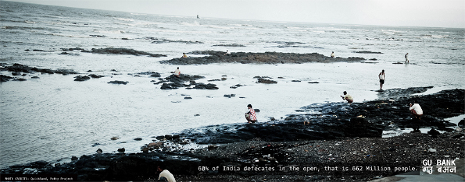
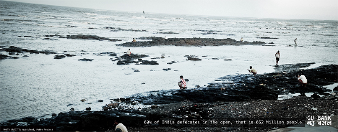

Background / Issue and Objectives
India is currently witnessing a massive internal migration. By 2030, 40.6% of the population will be living in cities. Currently, 80% of Indian cities do not possess even a partial sewage network. Lack of facilities and reluctance to pay for facilities causes new migrants to return to the once socially accepted, traditional rural practice of using open spaces for defecation, causing faecal contamination to become the leading cause of water-borne diseases.
Approach
From analysis of existing design research, particularly that conducted by Quicksand (Potty Project), we developed 3 thematic areas. These were reviewed with WASH experts from Med Air and London School of Tropical Hygiene and Medicine.
From this we developed six prototype directions.
Research was conducted in three Indian cities with 80 men who had been identified as least likely to utilise existing facilities. The pros and cons of our concepts and the prototypes were discussed. We held debates covering topics from practical concerns over the time it would take for queuing to the acceptability of using human waste to provide power for their homes.
Results
We developed a desirable and viable system called “Gu Bank”. The Gu Bank enterprise provides a sustainable off-grid sanitation solution for people who only have access to pay-per-use toilet facilities.
Members are provided with a monthly supply of hygienic & decomposable one-time use bags and access to grounds maintained by Gu Bank. After use, members simply drop their used bags in a nearby skip. The bags are anaerobically decomposed in Gu Bank’s bio-gas Plant to produce clean fuel. Each deposit earns the members credits, which can be redeemed for fuel cylinders.
This stop-gap solution for removal of faecal matter from the public sphere recognises the need for a quick and realistic solution to a complex problem and is intended to supplement longer-term efforts.
 
